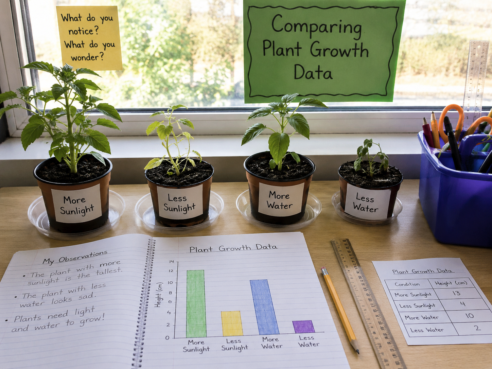
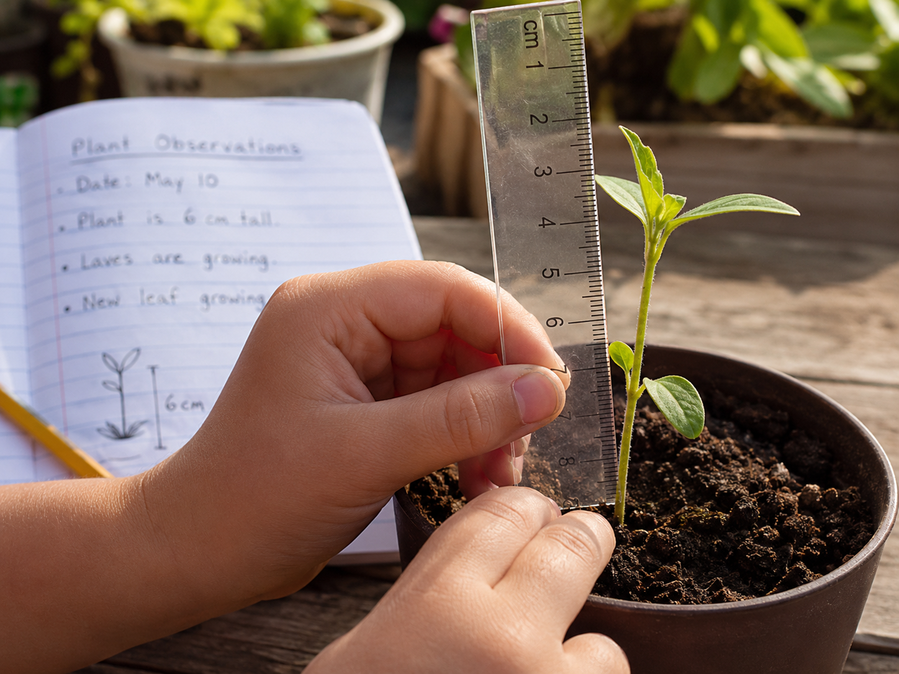

Keep this question in mind. By the end, you'll have real data to answer it!
Start here. Learn the words you will use today.
Look at the photo at the top of this lesson — four pots of plants sitting on a windowsill. Each plant grew under a different condition.
Good scientists notice things before they explain them. Look at the size of the plants, the color, how full the leaves are. Write what you actually see — not what you think should be there.
Scientists who study plants use these words every day. Tap each card to flip it and read the definition. You'll need these words during the investigation!
Copy this sentence carefully into your science notebook:
"Scientists use data and evidence to find patterns and draw conclusions about how plants grow."
Now learn the main science idea.

Plants don't all grow the same way. When scientists study plant growth, they collect datadataInformation collected during an investigation — like measurements or counts. about things they can measure — plant height, number of leaves, and color.
They write everything down carefully. A good observation is specific: "13 cm tall with 8 dark green leaves" is much more useful than "it grew a lot."

To find out what helps plants grow, scientists change only one conditionconditionThe setting a plant is growing in — like how much light or water it gets. at a time. In our investigation, some plants got more sunlight and some got less. Others got more water or less water.
Everything else — the same kind of seed, the same soil, the same pot size — stays the same. That way, if the plants grow differently, we know exactly why.
A data table shows the numbers. A bar graph makes those numbers easy to see. When the bars are different heights, you can spot a patternpatternSomething that repeats or changes in a predictable way. right away.
When you find a pattern in your data, you're ready to write a conclusionconclusionAn explanation based on evidence from your investigation. — an explanation that uses your evidenceevidenceInformation that supports or explains your answer. to answer the original question.
Real-World Connection: Farmers and gardeners do exactly this — they compare how crops grow in different spots to figure out where to plant next season.
Plants need sunlight and water to grow. When scientists change one condition at a time and collect data, patterns in the results show which conditions matter most.
Data and graphs help us see those patterns clearly — so our conclusions are based on evidence, not guesses.
Curious? Go Deeper
Why does sunlight matter so much? Plants make their own food using a process called photosynthesis. They take in sunlight, water, and air — and turn those ingredients into sugar for energy. Without light, there's no energy, and without energy, there's no growth.
Here's something interesting: not all plants need the same amount. Ferns love the shade. Cacti love full sun. That's why different plants live in different places — forests, deserts, meadows — and why scientists pay close attention to growing conditions when they study plant life cycles.
Now test the idea yourself.
You'll need: Your science notebook, a pencil, and colored pencils. Optional: graph paper.
In this investigation, you'll study real plant growth data — the same data from the four plants on the windowsill. Follow each step and record your work as you go.
Set Up Your Data Table: In your notebook, draw a table with two columns — Condition and Height (cm). Fill in the four rows using this data: More Sunlight: 13 cm · Less Sunlight: 4 cm · More Water: 10 cm · Less Water: 2 cm. Remember — all four plants started as seeds at 0 cm.
Create a Bar Graph: On the next page of your notebook (or on graph paper), draw a bar graph. Put the four conditions on the bottom. Put height in centimeters (0–15) on the side. Draw and color a bar for each condition. Make each bar a different color.
Compare Two Conditions: Pick one pair to compare: either the sunlight pair (More vs Less) or the water pair (More vs Less). Write down the difference in centimeters. Which condition had a bigger impact on plant growth?
Find the Pattern: Look at your graph. Write one sentence in your notebook that describes the pattern you see. Start with: "Plants with more ___ grew ___ than plants with less ___."
Think about it: Consider these questions as you look back at your investigation. You'll use your best thinking in the Write & Explain section.
Tell the story of this investigation from beginning to end — what the scientists wanted to find out, what they did, what they measured, and what the data showed. Use your notebook to help you.
Think through each question on your own. Talk it through in your mind — or discuss with someone nearby.
Check what you understand.
Show what you learned.
🔍 Part A — Identify & Organize
Look at the data table below. Use it to answer questions 1–3 in your notebook.
| Condition | Height (cm) | Grew Most / Least? |
|---|---|---|
| More Sunlight | 13 | your answer |
| Less Sunlight | 4 | your answer |
| More Water | 10 | your answer |
| Less Water | 2 | your answer |
🚀 Part B — Short Answer
Answer each question in complete sentences. Use your science vocabulary!
What did the data from this investigation tell you about what plants need to grow?
What did you observe?
💡 Start with: "When I looked at the data, I noticed that…"
What does that tell you?
💡 Start with: "This evidence shows me that plants…"
Why does that make sense?
💡 Start with: "This makes sense because plants need…"
📚 Try to use at least one of these words: data, evidence, pattern, condition, conclusion
🎨 Part C — Draw & Label
In your notebook, draw a bar graph showing the four conditions and plant heights. Make it neat and label everything clearly — condition names, height scale, title, and a color key.
Submit your work on Canvas using one of these options:
Make sure your submission includes all of these: